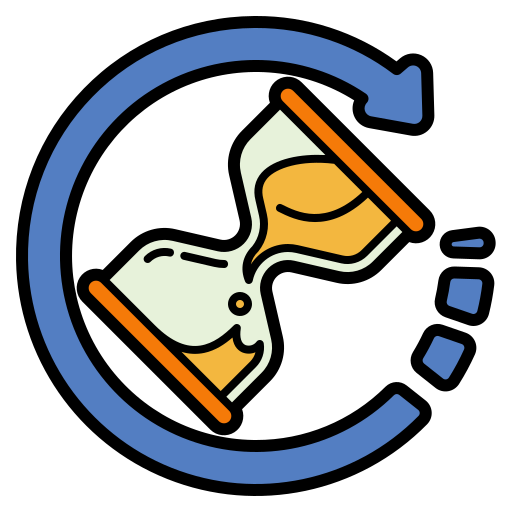

{% load static %}
<!DOCTYPE html>
<html lang="es">
<head>
    <meta charset="UTF-8">
    <meta name="viewport" content="width=device-width, initial-scale=1.0">
    <title>Salud360 - Mi Página</title>
    <link rel="stylesheet" href="{% static 'css/style.css' %}">
    <script src="https://cdn.jsdelivr.net/npm/chart.js"></script>
    <style>
        body {
            font-family: Arial, sans-serif;
            margin: 0;
            padding: 0;
            background-color: #ffffff;
        }
        .header {
            position: fixed;
            top: 0;
            width: 100%;
            background-color: #fff;
            display: flex;
            justify-content: space-between;
            align-items: center;
            padding: 20px;
            border-bottom: 1px solid #ddd;
            z-index: 1000;
        }
        .logo-container {
            display: flex;
            align-items: center;
        }
        .logo {
            font-size: 24px;
            font-weight: bold;
            color: #4CAF50;
            margin-right: 15px;
        }
        .divider {
            height: 24px;
            width: 2px;
            background-color: #ddd;
            margin-right: 15px;
        }
        .menu {
            display: flex;
            gap: 15px;
        }
        .menu a {
            font-size: 16px;
            font-weight: bold;
            color: #000;
            text-decoration: none;
            padding: 10px 15px;
            border-radius: 5px;
            background-color: #f1f1f1;
        }
        .login {
            margin-right: 40px;
        }
        .container {
            display: flex;
            justify-content: space-between;
            align-items: flex-start;
            max-width: 1200px;
            margin: 100px auto 50px;
            padding: 20px;
        }
        .progress-section {
            width: 55%;
            text-align: center;
        }
        .progress-container {
            width: 75%;
            margin: auto;
            text-align: center;
            position: relative;
        }
        .progress-text {
            position: absolute;
            top: 50%;
            left: 50%;
            transform: translate(-50%, -50%);
            font-size: 24px;
            font-weight: bold;
            color: #333;
        }
        .progress-metrics {
            display: flex;
            justify-content: center;
            gap: 40px;
            margin-top: 20px;
        }
        .metric {
            display: flex;
            align-items: center;
            font-size: 20px;
            font-weight: bold;
            color: #333;
        }
        .metric img {
            width: 30px;
            height: 30px;
            margin-right: 10px;
        }
        .goals-section {
            width: 40%;
            display: flex;
            flex-direction: column;
            gap: 20px;
        }
        .goal-box {
            padding: 20px;
            border-radius: 15px;
            background-color: #f9f9f9;
            text-align: center;
            box-shadow: 0 4px 8px rgba(0, 0, 0, 0.1);
        }
        .goal-box h3 {
            margin-bottom: 10px;
            color: #4CAF50;
        }
        .chart-container {
            width: 300px;
            height: 300px;
            margin: auto;
            position: relative;
        }
    </style>
</head>
<body>
    <div class="header">
        <div class="logo-container">
            <h1 class="logo">Salud360</h1>
            <div class="divider"></div>
            <a href="{% url 'mi_pagina' %}" class="menu">Mi Página</a>
        </div>
        <div class="menu login">
            <a href="{% url 'login' %}">Inicia sesión</a>
        </div>
    </div>
    
    <div class="container">
        <div class="progress-section">
            <h2>Mi Progreso Diario</h2>
            <div class="progress-container">
                <canvas id="stepsChart"></canvas>
                <div class="progress-text" id="stepsText">9567 pasos</div>
            </div>
            <div class="progress-metrics">
                <div class="metric"> <span id="caloriesCount">320 kcal</span></div>
                <div class="metric"> <span id="distanceCount">6.4 km</span></div>
                <div class="metric"> <span id="timeCount">45 min</span></div>
            </div>
        </div>
        <div class="goals-section">
            <div class="goal-box">
                <h3>Meta Diaria de Ejercicio</h3>
                <p><strong>10,000</strong> pasos recomendados</p>
                <p><strong>500 kcal</strong> a quemar</p>
                <div class="goal-progress">
                    <div class="progress-bar">
                        <span style="width: 75%;"></span>
                    </div>
                    <p>Progreso: <strong>75%</strong></p>  <!-- Aquí está la línea que buscas -->
                </div>
            </div>
            <div class="goal-box">
                <h3>Distribución de Macronutrientes</h3>
                <div class="chart-container">
                    <canvas id="macrosChart"></canvas>
                </div>
            </div>
        </div>
    </div>

    <script>
        document.addEventListener("DOMContentLoaded", function () {
            // Gráfico de Pasos
            var stepsCtx = document.getElementById('stepsChart').getContext('2d');
            var stepsChart = new Chart(stepsCtx, {
                type: 'doughnut',
                data: {
                    labels: ['Pasos dados', 'Faltantes'],
                    datasets: [{
                        data: [9567, 10000 - 9567],
                        backgroundColor: ['#4CAF50', '#ddd']
                    }]
                },
                options: {
                    responsive: true,
                    cutout: '80%',
                    plugins: {
                        legend: { display: false },
                        tooltip: { enabled: false }
                    }
                }
            });
    
            // Gráfico de Macronutrientes
            var macrosCtx = document.getElementById('macrosChart').getContext('2d');
            var macrosChart = new Chart(macrosCtx, {
                type: 'doughnut',
                data: {
                    labels: ['Proteínas (100g)', 'Carbohidratos (250g)', 'Grasas (70g)'],
                    datasets: [{
                        data: [100, 250, 70],
                        backgroundColor: ['#4CAF50', '#FFCA28', '#FF7043']
                    }]
                },
                options: {
                    responsive: true,
                    plugins: {
                        legend: { position: 'bottom' }
                    }
                }
            });
        });
    </script>
</body>
</html>
